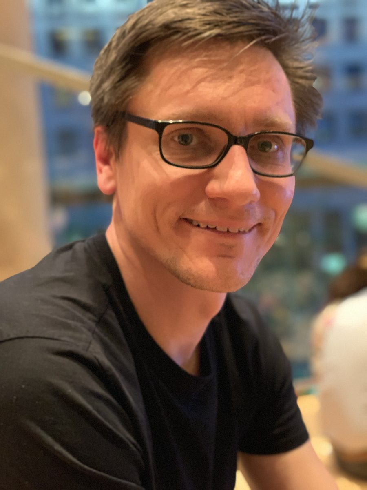
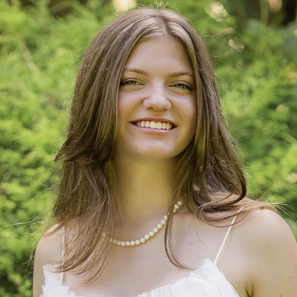
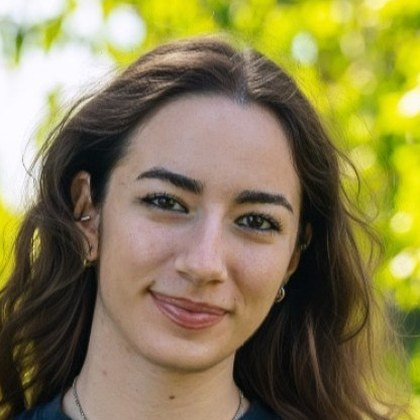
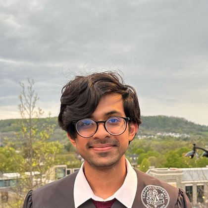
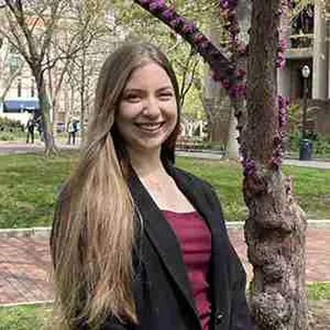

Cosmin Ilie
A central thread of my research is the study of the first stars and galaxies in the Universe, and what they can tell us about dark matter — including the possibility that some of the earliest, brightest objects JWST has ever seen were powered not by fusion, but by dark matter annihilation.

Dark matter across cosmic messengers
I am an Assistant Professor of Physics and Astronomy at Colgate University. My research sits at the intersection of dark matter theory and observational astrophysics: I build theoretical models of how dark matter shapes the first objects in the universe, and derive predictions that telescopes can directly test. The key question at the core of my research agenda is: what observable traces might dark matter leave behind? One possibility is spectacular. In the Universe’s first star-forming halos, annihilating dark matter can heat collapsing primordial gas and support a star against its own gravity, allowing it to grow to a million times the mass of the Sun and outshine an entire young galaxy. These objects are supermassive dark stars — and JWST gives us our first realistic opportunity to find them.
It may already have. In 2023 I identified the first three photometric dark star candidatesSupermassive Dark Star Candidates Seen by JWST Ilie, Paulin & Freese · Proceedings of the National Academy of Sciences, 2023 2023 NAS Cozzarelli Prize in JWST imaging — work recognized with the National Academy of Sciences Cozzarelli Prize. I then extended the search to spectroscopySpectroscopic Supermassive Dark Star Candidates Ilie, Mahmud, Paulin & Freese · Proceedings of the National Academy of Sciences, 2025, identifying cosmic-dawn sources whose NIRSpec spectra are consistent with dark stars. What continues to draw me to this problem is the possibility that a single class of object could help resolve three seemingly distinct puzzles of cosmic dawnSupermassive Dark Stars and Their Remnants as a Possible Solution to Three Recent Cosmic Dawn Puzzles Ilie, Paulin, Petric & Freese · Universe, 2026 Journal cover: galaxies that appear too bright, black holes that appear too massive, and JWST’s enigmatic little red dots. Dark stars may also leave signatures beyond infrared light: black holes seeded by dark starsReconstructing PTA Measurements via Early Seeding of Supermassive Black Holes Ghodla & Ilie · Physical Review D, 2026 could contribute substantially to the gravitational-wave background detected by pulsar timing arrays in 2023.
I earned my Ph.D. at the University of Michigan in 2011 under Katherine Freese, after a B.S. in Theoretical Physics at the University of Bucharest, and held positions at UNC Chapel Hill, NASA/CREST centers at NCCU, Los Alamos National Laboratory, and IFIN-HH in Romania before coming to Colgate.
What I work on
The first stars in the universe may have run on dark matter — and JWST may have already seen them. They may also explain JWST’s puzzling “blue monsters”.
When dark stars collapse, they leave black holes massive enough to seed the earliest supermassive black holes, and could naturally explain JWST's little red dots.
Stars, compact objects, exoplanets, brown dwarfs — the universe is full of natural dark matter detectors, and I use many of them to probe the particle nature of dark matter.
The dark sector has a history — and its early moments shape everything we observe today.
Undergraduates: from students to collaborators
I love involving undergraduates in research. Helping a spark of curiosity grow into a passion for discovery is among the most rewarding aspects of my professional life. Since my first student-coauthored publication — with Saiyang Zhang ’19 in 2019 — I published 15 papers with eight undergraduates in PNAS, Physical Review D, The Astrophysical Journal, JCAP, Universe, and Astronomy and Computing. These students earned numerous departmental, institutional, and national honors, including a Goldwater Scholarship, the APS Beth Brown Memorial Award, and recognition as a national finalist for the APS LeRoy Apker Award.
Some are now at Harvard, Penn, Carnegie Mellon, Berkeley, UT Austin, CUNY, CITA, the Institute for Advanced Study, and SLAC.
Research in the public eye
My work appears in more than 200 stories, interviews, and videos worldwide.
† undergraduate coauthor
Dark stars
Dark matter annihilation may have powered some of the Universe’s first stars before they ignited fusion, allowing them to grow into supermassive dark stars. I helped develop this idea and predict their detectable signatures with JWST, more than a decade before launch. At Colgate, my group built the analysis pipeline that identified the first photometric and spectroscopic candidates in the JWST data, and we are now using machine learning to accelerate discovery and search for decisive spectral signatures. If they exist, dark stars naturally explain JWST’s “blue monsters”: extremely bright, dust-free, very compact galaxies.
Dark star seeded supermassive black holes
General-relativistic instabilities trigger the collapse of supermassive dark stars, providing a natural seeding mechanism for the billion-solar-mass black holes already observed at cosmic dawn. Mergers of black holes seeded this way may also contribute substantially to the gravitational-wave background detected by pulsar timing arrays. In addition, collapsed supermassive dark stars could become quasi-stars with cool (3,000–6,000 K) photospheres, thus reproducing key spectral and morphological properties of JWST’s mysterious “little red dots.”
Astrophysical objects as dark matter probes
I use stars and compact astrophysical objects as natural detectors of dark matter. My work develops analytic and numerical descriptions of dark matter capture — the process by which particles scatter inside an object, lose energy, and become gravitationally bound — including multiscatter, multicomponent, and velocity-suppressed interactions. Applying this framework to first stars, exoplanets, brown dwarfs, and black holes allows me to translate their heating, evolution, and survival into constraints on dark matter properties that may be inaccessible to terrestrial experiments.
Early universe cosmology
A complementary strand of my research explores the physics of the early Universe, well before the first atoms formed. For example, I explored nonstandard expansion histories such as early matter-dominated eras, nonstandard dark matter production models such as the dark Big Bang, and alternatives to cosmic inflation. These questions are largely distinct from the other three themes of my research program, but together they reflect a broader goal: understanding how fundamental physics leaves observable traces across cosmic history.
Little red dots as collapsed dark stars
Collapsed dark stars sometimes leave behind black holes shrouded in their own outer envelopes, naturally explaining many of the observed properties of JWST’s little red dots.
Dark stars echo through spacetime
If collapsing dark stars seeded supermassive black holes early, their subsequent mergers can reproduce the nanohertz gravitational-wave background seen by pulsar timing arrays.
Spectroscopic dark star candidates
Found four cosmic dawn objects with spectra consistent with that of supermassive dark stars, one of which shows hints of a smoking gun helium absorption feature.
National Academy of Sciences Cozzarelli Prize
Class I · Physical and Mathematical Sciences
Awarded to Supermassive Dark Star Candidates Seen by JWST, with Jillian Paulin ('23) and Katherine Freese. The prize recognizes outstanding contributions to the scientific disciplines represented by the National Academy of Sciences: six papers a year, chosen from more than 3,000 research articles in PNAS, one for each of the six classes under which the Academy is organized.
Academy announcement · PNAS announcement · The paper · Colgate story
- 2024–2026Picker Interdisciplinary Science Institute Major Grant — $84,500 (PI)Probing the Nature of Dark Matter with the First Stars and Galaxies in the Universe · Grant No. 826837
- 2023–2024New York Space Grant Faculty Fellowship — $10,000 (PI)The first stars in the Universe as Dark Matter probes · Grant No. 90830-20365
- 2026Dark Stars: A ReviewIdentification of Dark Matter 2026 · Zaragoza, Spain
- 2026Dark Stars (special evening one-hour talk)Lake Louise Winter Institute · Lake Louise, Alberta, Canada
- 2025Dark Stars and Their Supermassive RemnantsSpace Telescope Science Institute · Galaxies and AGN Seminar
- 2024Dark Stars: A Possible Solution to Two Key Astronomical PuzzlesSimons Foundation Center for Computational Astrophysics · New York, NY
- 2024Dark Matter and the First Stars (keynote address)Lake Louise Winter Institute · University of Alberta, Canada
- 2024JWST: A New Era for the First Stars and Galaxies as Dark Matter ProbesDark Matter, First Light workshop · Perimeter Institute, Waterloo, Canada · recording on PIRSA
- 2022The First Generation of Stars as Dark Matter ProbesXENON Collaboration Seminar
- 2020What can the first generation of stars tell us about dark matter?Colgate University, NASC Colloquium · Hamilton, NY
- 2012Cyclic Inflation in Phantom CosmologiesIFIN-HH DFT Seminar · Magurele, Romania
- 2011Dark Stars and Their DetectabilitySF11 Cosmology Summer Workshop · Santa Fe, NM
† marks undergraduate coauthors, with their graduating class in parentheses. Full list also on Google Scholar and ORCID.
Undergraduate research, all the way to publication
At a liberal arts college the students are the research group. Mine join at various stages, some even during their freshman year. For each my main goal is the same: enrich their college experience and boost their chances for a successful future career. To achieve this I strive to include undergraduates at all stages of the research process, culminating with presentations at national and international conferences and publication in top journals.
Current group
Adiba Amira Siddiqa
Machine-learning identification of dark star candidates in JWST surveys. Coauthored two Astronomy and Computing papersNeural Network Identification of Dark Star Candidates. I. Photometry Mahmud, Siddiqa & Ilie · Astronomy & Computing, 2026Neural Network Identification of Dark Star Candidates. II. Spectroscopy Siddiqa, Mahmud & Ilie · Astronomy & Computing, 2026 introducing machine-learning tools for photometric and spectroscopic dark star identification.
Gunnar Gasper
Modeling dark stars (with MESA) and their spectra (TLUSTY, SYNSPEC, CMFGEN). Manuscript in preparation for ApJ submission. Presented our work at several undergraduate research conferences.

Charlotte Wilke-Olsen
Machine-learning identification of dark star candidates in JWST surveys. Building Bayesian neural-network algorithms for the candidate detection pipeline. Presented our work at several undergraduate research conferences.
Past honors mentees
Honors and high-honors mentees, listing research theme, awards for research done in the group, publications we coauthored, and placement.

Manolya Yatman
- Searching for Supermassive Dark Star Candidates with JWST Photometric Surveys (ApJ; in prep.).
- Presented our work at several conferences.
Interviewed by: Beyond Bryn Mawr
Now: Ph.D. student, City University of New York
Sayed Shafaat Mahmud
- Coauthored three papersSpectroscopic Supermassive Dark Star Candidates Ilie, Mahmud, Paulin & Freese · Proceedings of the National Academy of Sciences, 2025Neural Network Identification of Dark Star Candidates. I. Photometry Mahmud, Siddiqa & Ilie · Astronomy & Computing, 2026Neural Network Identification of Dark Star Candidates. II. Spectroscopy Siddiqa, Mahmud & Ilie · Astronomy & Computing, 2026: one in PNAS and two in Astronomy and Computing.
- Presented our work at national and international conferences.
Jared Diks
- Coauthored two JCAP papersConstraining Asymmetric Dark Matter by Black Hole Formation in Neutron Stars and Pop III Stars Diks & Ilie · JCAP, 2025The Effectiveness of Exoplanets and Brown Dwarfs as Sub-GeV Dark Matter Detectors Ilie, Levy & Diks · JCAP, 2024.
- Presented our work at national and international conferences.
Lance Chen
- Presented our work at the APS April Meeting and the NY6 Undergraduate Research Conference.
Richard Casey
- Coauthored a Physical Review D paperDark Sector Tunneling Field Potentials for a Dark Big Bang Casey & Ilie · Physical Review D, 2024.
- Presented our work at several international conferences.
Interviewed by: Space.com
Now: Scientist, SLAC National Accelerator Laboratory
Jillian Paulin
- Coauthored four papersSupermassive Dark Star Candidates Seen by JWST Ilie, Paulin & Freese · Proceedings of the National Academy of Sciences, 2023 2023 NAS Cozzarelli PrizeSpectroscopic Supermassive Dark Star Candidates Ilie, Mahmud, Paulin & Freese · Proceedings of the National Academy of Sciences, 2025Supermassive Dark Stars and Their Remnants as a Possible Solution to Three Recent Cosmic Dawn Puzzles Ilie, Paulin, Petric & Freese · Universe, 2026 Journal coverAnalytic Approximations for the Velocity Suppression of Dark Matter Capture Ilie & Paulin · ApJ, 2022: two in PNAS, one in Universe, and one in ApJ.
- Presented our work at national and international conferences.
Interviewed by: Scientific American · Colgate Magazine
Now: Ph.D. candidate, University of PennsylvaniaCaleb Levy
- Coauthored four papersMulticomponent Multiscatter Capture of Dark Matter Ilie & Levy · Physical Review D, 2021Constraining Dark Matter Properties with the First Generation of Stars Ilie, Levy, Pilawa & Zhang · Physical Review D, 2021The Effectiveness of Exoplanets and Brown Dwarfs as Sub-GeV Dark Matter Detectors Ilie, Levy & Diks · JCAP, 2024Probing Below the Neutrino Floor with the First Generation of Stars Ilie, Levy, Pilawa & Zhang · non-refereed letter, 2020: two in Physical Review D, one in JCAP, and one non-refereed letter.
- Presented our work at national and international conferences.
Interviewed by: Colgate News · Astronomy in Color
Now: Ph.D. student, Harvard UniversityIan Bania
Jacob Pilawa
- Coauthored three papersConstraining Dark Matter Properties with the First Generation of Stars Ilie, Levy, Pilawa & Zhang · Physical Review D, 2021Comment on “Multiscatter Stellar Capture of Dark Matter” Ilie, Pilawa & Zhang · Physical Review D, 2020Probing Below the Neutrino Floor with the First Generation of Stars Ilie, Levy, Pilawa & Zhang · non-refereed letter, 2020: two in Physical Review D and one non-refereed letter.
Saiyang Zhang
- Coauthored five papersDetectability of Supermassive Dark Stars with the Roman Space Telescope Zhang, Ilie & Freese · ApJ, 2024Constraining Dark Matter Properties with the First Generation of Stars Ilie, Levy, Pilawa & Zhang · Physical Review D, 2021Comment on “Multiscatter Stellar Capture of Dark Matter” Ilie, Pilawa & Zhang · Physical Review D, 2020Multiscatter Capture of Superheavy Dark Matter by Population III Stars Ilie & Zhang · JCAP, 2019Probing Below the Neutrino Floor with the First Generation of Stars Ilie, Levy, Pilawa & Zhang · non-refereed letter, 2020: one in ApJ, two in Physical Review D, one in JCAP, and one non-refereed letter.
Jonah Kudler-Flam
What it was like
Mentees describing the research and the experience of doing it.
“He believed in my abilities, even when I was in doubt, and he helped nurture my curiosity for physics. I am eternally grateful for his mentorship and would not be here if he hadn’t had faith in me.”
“My favorite part of the internship has definitely been working on a fringe idea, investigating an unproven theory with newly released data.”
“…make sure you can find good mentors who will give you good advice and are willing to listen to you.”
“Prior to graduate school, I studied novel methods of dark matter detection with Cosmin Ilie at Colgate University.”
Group feature: Exploring the Mysteries of Dark Matter — Colgate Magazine, Winter 2021, on the undergraduate dark matter group, covering Saiyang Zhang, Caleb Levy, Jillian Paulin and Jacob Pilawa.
Colgate students: want in?
Email me at cilie@colgate.edu expressing interest.
“Immediately after the talk, I spoke to Prof. Ilie and asked if he would be willing to give me a chance to research dark matter with him, and he was very welcoming despite my being a first-year.”
Courses taught at Colgate
| Level | Course | Terms |
|---|---|---|
| Core | CORE S122, Our Universe: 95% Unknown | Fall 2026 |
| Introductory | PHYS 105, Mechanical Physics | Fall 2024 |
| PHYS 112, Fundamental Physics II | Spring 2019, 2021–2022 | |
| PHYS 131, Atoms and Waves | Fall 2016–2017, 2020 | |
| Intermediate | PHYS 205, Mathematical Methods of Physics | Fall 2022; Spring/Fall 2024 |
| PHYS 232, Introduction to Mechanics | Spring 2020 | |
| Advanced | ASTR 414, Astrophysics | Spring 2018, 2020, 2022, 2024, 2026 |
| PHYS 431, Classical Mechanics | Fall 2018–2023 | |
| PHYS 432, Electromagnetism | Spring 2017 | |
| PHYS 456, Relativity and Cosmology | Spring 2019, 2023 | |
| Capstone & research | PHYS 410, Advanced Topics and Experiments | Fall 2016–2020, 2022–2025 |
| PHYS 491, Independent Study | Spring 2017 | |
| PHYS 492 / ASTR 492, Independent Study — Research | Spring 2019–2021, 2023–2026 |
Gravitational-wave echoes & three cosmic puzzles
- Aug 2026Phys.org — Dark stars may have left gravitational-wave echoes across the universe
- Aug 2026ScienceDaily — A mysterious cosmic hum may come from 13-billion-year-old dark stars
- Aug 2026Space.com — 'Dark stars' could be the seeds of supermassive black holes, scientists say
- Aug 2026SciTechDaily — Dark Stars May Have Left a Gravitational-Wave Signal We Can Detect Today
- Aug 2026Universe Today — Pulsar Timing Arrays Could Look for Evidence of Dark Matter Stars
- Aug 2026EurekAlert! — Dark stars may have left gravitational-wave echoes across the Universe
- Aug 2026Open Access Government — Dark stars may have left gravitational-wave echoes across the universe
- Aug 2026Descopera.ro — Astronomii ar fi descoperit sursa unor ecouri bizare detectate în UniversRO
- Apr 2026BBC Science Focus — This radical ‘dark stars’ theory could solve our Universe’s greatest mystery
- 2026Epsiloon — Étoiles noires : le nouvel espoir (cover story)FR
- Jan 2026Phys.org — Dark stars could help solve three pressing puzzles of the high-redshift universe
- Jan 2026ScienceDaily — Dark stars could solve three major mysteries of the early universe
- Jan 2026SciTechDaily — Dark Stars May Solve Three of JWST's Biggest Cosmic Mysteries
- 2026Earth.com — Dark stars may solve three strange mysteries of the early universe
- 2026SpaceDaily — Dark star theory links JWST early universe anomalies
- 2026Futura Sciences — Have scientists finally spotted stars feeding on mysterious dark matter?
Spectroscopic candidates
- 2025NPR Science Friday — Have Astrophysicists Spotted Evidence For 'Dark Stars'?
- 2025New Scientist — We may have discovered the first-ever stars powered by dark matter
- Oct 2025Phys.org — Potential smoking gun signature of supermassive dark stars found in JWST data
- Oct 2025Colgate University — Potential Smoking Gun Signature of Supermassive Dark Stars Found in JWST Data
- Oct 2025ScienceDaily — JWST may have found the Universe's first stars powered by dark matter
- 2025ScienceAlert — JWST May Have The Best Evidence Yet of a Bizarre 'Dark Star'
- 2025UT Austin, College of Natural Sciences — More Dark Star Candidates Found in JWST Data
Dark Big Bang
- Dec 2024Space.com — Could dark matter have been forged in a 'Dark Big Bang?'
- Dec 2024CNN Brasil — Matéria escura pode ter se originado em um “Big Bang Escuro”, dizem cientistasPT
- Nov 2024Physics World — Delayed Big Bang for dark matter could be detected in gravitational waves
- Nov 2024Phys.org — New study reveals possible origins of dark matter in 'Dark Big Bang' scenario
- Nov 2024ScienceDaily — Possible origins of dark matter in 'Dark Big Bang' scenario
- Nov 2024Colgate University — New Study Reveals Possible Origins of Dark Matter in “Dark Big Bang” Scenario
- 2024ScienceAlert — Mysterious 'Dark Big Bang' Could Explain The Origins of Dark Matter
- 2024Earth.com — 'Dark Big Bang' theory attempts to explain origin of dark matter
The first JWST candidates
- 2023Reuters — Webb telescope captures tantalizing evidence for mysterious 'dark stars'
- 2023Salon — Dark matter power: James Webb telescope may have proven the existence of giant dark stars
- 2023Physics World — Stars powered by dark matter may have been seen by the JWST
- 2023Science News — The James Webb telescope may have spotted stars powered by dark matter
- 2023APS Physics — Dark Star Hypothesis Sees the Light of Day
- 2023Live Science — James Webb telescope reveals 3 possible ‘dark stars’
- 2023SciTechDaily — JWST May Have Discovered a New Kind of Star Powered by Dark Matter
- 2023Science News Explores — New telescope images may unveil stars fueled by dark matter
- 2023New Scientist — Dark stars: Have we finally found a weird sun powered by dark matter? (cover feature)
- 2023PBS Space Time — Did JWST Discover Dark Matter Stars? (1.5M+ views)
- 2023Scientific American — JWST Might Have Spotted the First Dark Matter Stars
- 2023El País — ¿Existen las estrellas oscuras?ES
- 2023National Geographic France — Des astrophysiciens pensent avoir repéré des « étoiles noires » pour la première foisFR
- 2023Colgate Magazine — Research Results May Show Evidence of Dark Stars
- 2023Colgate University — James Webb Telescope Catches Glimpse of Possible First-Ever Dark Stars
- 2023Colgate University — Colgate Researchers Win Cozzarelli Award from the National Academy of Sciences
Before JWST
- 2019Discover — The Early Universe May Have Been Filled With Dark Matter Stars
- 2018Astronomy — Dark stars come into the light
- 2016BBC Future — Did 'dark stars' help form the Universe?
- 2014Quanta Magazine — In Search of Dark Stars
- 2010Scientific American — Dark Side of Black Holes: Dark Matter Could Explain the Early Universe’s Giant Black Holes
- 2010Science & Vie — Étoiles noires : elles seraient les premiers astresFR
Banner image: JWST Advanced Deep Extragalactic Survey (JADES). Image: NASA, ESA, CSA, STScI, Brant Robertson (UC Santa Cruz), Ben Johnson (CfA), Sandro Tacchella (Cambridge), Phill Cargile (CfA).
Media enquiries: cilie@colgate.edu.
Academic appointments
- 2021–presentAssistant ProfessorColgate University, Physics & Astronomy · Hamilton, NY
- 2020–2021Senior LecturerColgate University
- 2018–2020Visiting Assistant ProfessorColgate University
- 2016–2018Lecturer and Research AssociateColgate University
- 2014–2016Postdoctoral Research AssociateUniversity of North Carolina at Chapel Hill
- 2013–2014Postdoctoral FellowNASA and CREST Centers, North Carolina Central University
- 2012–2020Scientific Researcher / Postdoctoral ResearcherNational Institute for Physics and Nuclear Engineering · Magurele, Romania
- 2011–2012Visitor, Subatomic Physics Group (P-25)Los Alamos National Laboratory
- 2008–2011Research AssistantUniversity of Michigan
Education
- 2011Ph.D. in Physics, University of MichiganAdvisor: Katherine Freese · Dissertation: Selected Topics on the Dark Side
- 2001B.S. in Theoretical Physics, University of BucharestThesis: Path Integrals and Their Applications in Physics
Honors & fellowships
- 2023National Academy of Sciences Cozzarelli PrizePhysical and Mathematical Sciences
- 2002Department of Physics FellowshipUniversity of Michigan
- 1997–2001Romanian Government Fellowship
Service to the profession
- 2025Proposal Reviewer, NASA FINESST grant program
- 2025Mentor, KNAC Summer Research Program
- 2022–presentReviewer, The Astrophysical Journal
- 2024–presentReviewer, JCAP
- 2025–presentReviewer, Astronomy & Astrophysics
- 2024–presentManuscript Reviewer, Princeton University Press
- 2024, 2026Session Chair, Lake Louise Winter Institute
- 2024Session Organizer, Marcel Grossmann XVIIThe First Stars and Their Remnants as Dark Matter Probes · Pescara, Italy
- 2019Organizer, APS Lilienfeld Prize Public LectureColgate University · speaker: Katherine Freese
Institutional & departmental service
- 2026–presentDepartmental Subcommittee on AI in Teaching
- 2025–presentColgate University Research Council
- 2024–presentDepartmental Assessment Coordinator
- 2024–presentSigma Pi Sigma Advisor
- 2023–presentPhysics & Astronomy VAP and TS Search Committees
- 2023Colgate University STARS Program Mentor
- 2022–presentGoldwater and Churchill Fellowships Committee
- 2022Colgate University Summer Funding Review Committee
- 2021–2024Physics & Astronomy Seminar Organizer